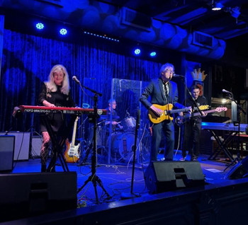

Acid Blues • New England
⭐ Early Adopter Band on BANDtroductions

Bees Deluxe is a British/American modern blues band recently recognized as semi-finalists in the International Blues Challenge in Memphis and winners of the 2025 New Hampshire State Blues Challenge. Known for inventive originals and bold reinterpretations, the band draws from artists such as Billie Holiday, B.B. King, Etta James, Otis Rush, Burt Bacharach, Joe Zawinul, and Frank Zappa.
Their sound is rooted in tradition yet unmistakably forward-looking. Blues Blast Magazine described the band as “what might happen if Freddie King took a lot of acid then wrote a song with Pat Metheny and asked a strung-out Stevie Ray Vaughan to take a solo.”
🎤 Looking for venues
📍 Based in New England
For booking or inquiries, contact the band directly by email or visit their official website.